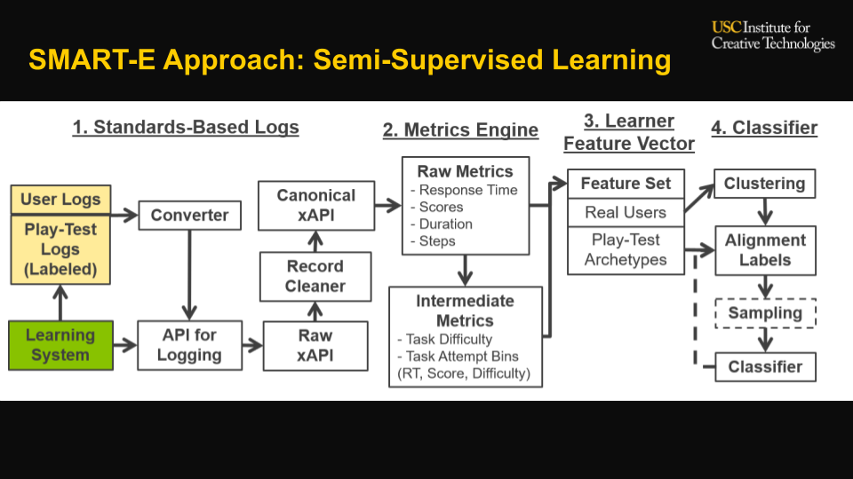

|
I’m a Research Fellow at Microsoft Research India, fortunate to be advised by Dr. Harsha Vardhan Simhadri. I also actively collaborate with Dr. Ravishankar Krishnaswamy, and with Dr. Rahul Sharma as a member of the Machine Learning and Optimization (MLO) group. My current research interests include theoretical and practical aspects of Systems + Machine Learning, for both highly resource-constrained devices (EdgeML) and resource-heavy server nodes (Akupara). Prior to this, I graduated from the Indian Institute of Technology, Patna, majoring in Computer Science and Engineering. I was advised by Dr. Joydeep Chandra for my Bachelors' Thesis on passenger demand prediction using graph convolutional networks. |
| |
|
|
| |
|  |
abstract /
paper /
video /
presentation
Engaged and disengaged behaviors have been studied across a variety of educational contexts. However, tools to analyze engagement typically require custom-coding and calibration for a system. This limits engagement detection to systems where experts are available to study patterns and build detectors. This work studies a new approach to classify engagement patterns without expert input, by using a play persona methodology where labeled archetype data is generated by novice testers acting out different engagement patterns in a system. Domain-agnostic task features (e.g., response time to an activity, scores / correctness, task difficulty) are extracted from standardized data logs for both archetype and authentic user sessions. A semi-supervised methodology was used to label engagement; bottom-up clusters were combined with archetype data to build a classifier. This approach was analyzed with a focus on cold-start performance on small samples, using two metrics: consistency with larger full-sample cluster assignments and stability of points staying in the same cluster once assigned. These were compared against a baseline of clustering without an incrementally trained classifier. Findings on a data set from a branching multiple-choice scenario-based tutoring system indicated that approximately 52 unlabeled samples and 51 play-test labeled samples were sufficient to classify holdout sessions at 85% consistency with a full set of 145 unsupervised samples. Use-cases and limitations of this approach are also discussed. |
| |

|
abstract /
bibtex /
article /
presentation
Measuring user engagement for learners is a critical problem in computer-based training. SMART-E classifies user engagement using a play-test methodology based on player personas - a small set of users acting out different engagement archetypes (e.g. dilligent, distracted, racing through). This archetype data is used as seed data for leveraging unlabeled user data for semi-supervised learning. In this paper, we describe our experiment in using SMART-E in the context of a GIFT cyber-security course.
@inproceedings{nye2020integrating,
title = {Integrating an Engagement
Classification Pipeline into a GIFT
Cybersecurity Module},
author = {Nye, Benjamin D and Core,
Mark G and Auerbach, Daniel and
Ghosal, Aviroop and Jaiswal, Shikhar
and Rosenberg, Milton},
booktitle = {Proceedings of the 8th
Annual Generalized Intelligent
Framework for Tutoring (GIFT) Users
Symposium (GIFTSym8)},
pages = {49},
year = {2020},
organization = {US Army Combat
Capabilities Development
Command--Soldier Center}
}
|

|
abstract /
bibtex
Open-Source repository for all the research outputs on resource-efficient Machine Learning from Microsoft Research India. It contains scalable and multi-framework compatible implementations of Bonsai, ProtoNN, FastCells, EMI-RNN, ShaRNN, RNNPool, DROCC, and tools such as SeeDot, Shiftry and MinUn for memory efficient fixed-point and posit compilation of ML models along with applications such as on-device Keyword Spotting and GesturePod.
@misc{edgeml04,
author = {{Dennis, Don Kurian and Gaurkar, Yash
and Gopinath, Sridhar and Goyal, Sachin and
Gupta, Chirag and Jain, Moksh and Jaiswal, Shikhar
and Kumar, Ashish and Kusupati, Aditya and
Lovett, Chris and Patil, Shishir G and
Saha, Oindrila and Simhadri, Harsha Vardhan}},
title = {{EdgeML: Machine Learning for
Resource-Constrained Edge Devices}},
url = {https://github.com/Microsoft/EdgeML},
version = {0.4},
}
|

|
abstract /
pdf
The project aimed at studying the various state-of-the-art techniques applied to modelling passenger demands, and proposed new methods in achieving better results over the existing ideas. Additionally, we developed a full-featured interactive web application, through which users could gain real-time information on predicted traffic from the source and destination regions. |
|